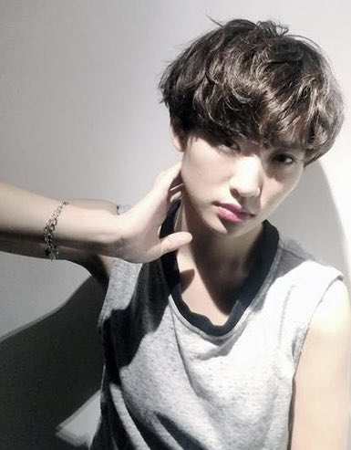
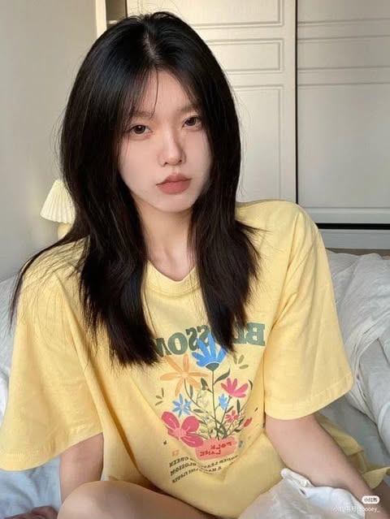
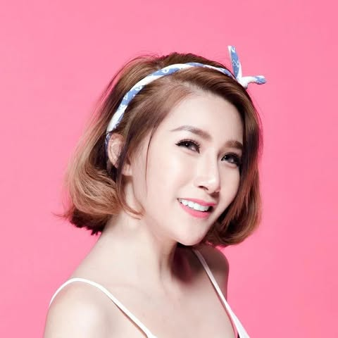
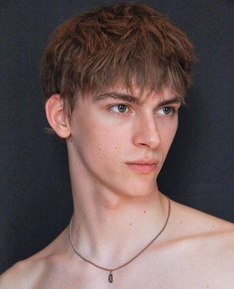
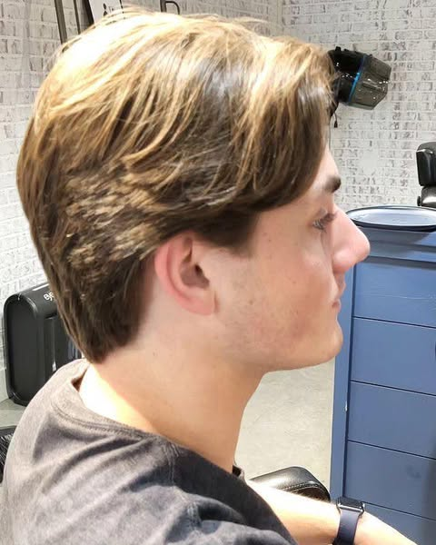
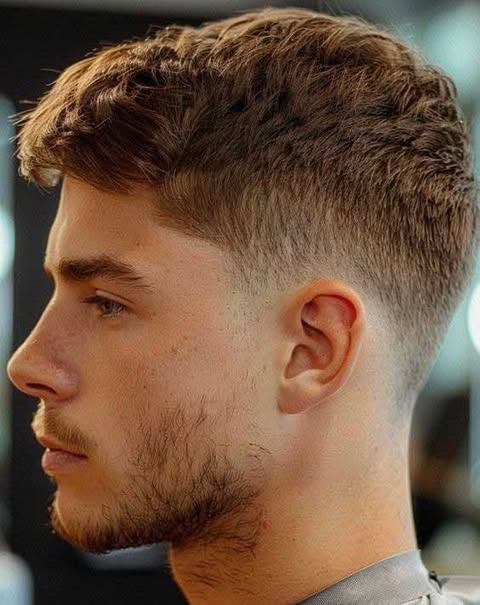

1))ทรงซอยสั้นแบบสาวมั่น
ผมซอยสั้นที่มีการสไลด์ไล่ระดับปลายผมให้เข้ารูป รับกับใบหน้า ทำให้หน้าดูซอฟต์สวย โดยผมข้างหูจะสไลด์ให้ยาวหน่อย แต่สามารถทัดหูเอาไว้ได้ ถ้าอยากให้หน้าเรียว ก็อาจเพิ่มหน้าม้าที่กรอบหน้าเข้าไปได้อีก ผมซอยสั้นแบบนี้ได้อารมณ์สาวหวานซ่อนเปรี้ยว

2)ทรงผมยาวตรงแสกกลาง
สาวๆ คนไหนที่ชอบดัดผม พี่เตยแนะนำว่าทรงนี้ก็รอดเช่นกันค่ะ ลองดัดผมเป็นลอนใหญ่ๆ ลอนผมจะช่วยพรางช่วงกรามและโหนกแก้มของเรา แต่อาจมีหลายคนไม่เซลฟ์กับการทำผมแสกกลาง แต่สาวๆ รู้รึเปล่าคะว่าการทำผมแสกกลางจะช่วยทำให้หน้าของเราดูเรียวและยาวมากขึ้น ยิ่งเมื่อทำผมแสกกลางและดัดผม บอกเลยว่าหน้าจะเรียวขึ้นแน่นอน

3)ทรงสไลซ์ดัดลอนอ่อน
สาวหน้ารูปหัวใจจะมีหน้าผากกว้างส่วนคางจะค่อนข้างแหลม ดังนั้นควรทำผมช่วงคางให้ดูมีวอลลุ่มหากคุณนั้นไว้ผมประบ่า แต่ทางที่ดีการไว้ผมยาวแล้วสไลซ์ให้ดูบางเบาเล็กน้อย หรือดัดผมเป็นลอนอ่อนๆ แล้วใช้การตัดผมหน้าม้าปาดข้างก็เป็นตัวเลือกที่ดีสำหรับสาวๆ มากกว่าตัดผมสั้นธรรมดานะ ทรงผมที่สาวหน้ารูปหัวใจไม่ควรทำเลยก็คือ การตัดผมม้าแบบตรง หรือตัดผมสั้นเลยบ่าลงไปเด็ดขาด! เพราะจะยิ่งเน้นโครงหน้าช่วงล่างให้ชัดขึ้นไปอีก หน้าคุณสาวๆ จะดูแข็งทันที

4)Long fringe
ทรงผม Long Fringe ถือเป็นทรงผมชายหน้าผากกว้างที่ช่วยอำพรางปิดบังช่วงหน้าผากได้อย่างดี โดยเป็นการตัดให้ผมยาวลงมาปิดช่วงหน้าผากจนถึงคิ้ว และตัดสไลด์ผมด้านหน้าให้ไล่ลงมาดูมีวอลลุ่มช่วยให้ดูผมหนาขึ้นด้วย ส่วนด้านข้างสไลด์บาง ๆ แบบไล่ระดับลงมาให้เข้ากันกรอบหน้า พร้อมกับการเซ็ตทรงผมให้ดูยุ่ง ๆ เหมือนไม่ตั้งใจ ก็จะทำให้ลุคดูเท่ ไม่เหมือนใคร รูปหน้าดูสมดุลกันมากขึ้นได้

5)ทรง Side parted long
ทรงผมไซด์พาร์ต (Side Part) เรียกชื่อไทยง่ายๆ ก็คือทรงผมแสกข้างนั่นแหละ ถือเป็น
ทรงผมที่อยู่คู่กับผู้ชายมาทุกยุคสมัย จุดเด่นคือการหวีปาดข้างด้านหนึ่งเพื่อแบ่งแสก
ชัดเจน ผม้านข้างมักจะมีการตัดให้สั้น จะสั้นรับกับผมด้านบน หรือตัดสั้นเกรียนก็แล้ว
แต่ความต้องการ ในส่วนของระดับความยาวของเส้นผมมักจะต้องมีความยาวพอ
สมควร เพื่อสามารถให้เซตแสกปาดเรียบได้ จัดเป็นทรงคลาสสิกยอดนิยมตลอดกาล
และเป็นอีกหนึ่งทรงที่ตอบโจทย์ความเท่ได้สูงสุด

6)ทรง Taper fade
เทเปอร์เฟด (Taper fade) คือการตัดผมจากระดับความยาวหนึ่งไปยังอีกจุด
หนึ่ง (จากจุดสูงสุดของศีรษะ ไล่มาด้านข้าง และลงมายังช่วงต้นคอ) โดยจะตัดให้ผมด้านบนมี
ความยาวมากที่สุด และสั้นไล่ระดับลงมาเรื่อยๆจะเห็นได้ว่าทรงผมสไตล์นี้จะมีการผสมผสานการ
ไล่ระดับ แต่ยังตัดไม่ให้สั้นมาก Two block เกาหลี